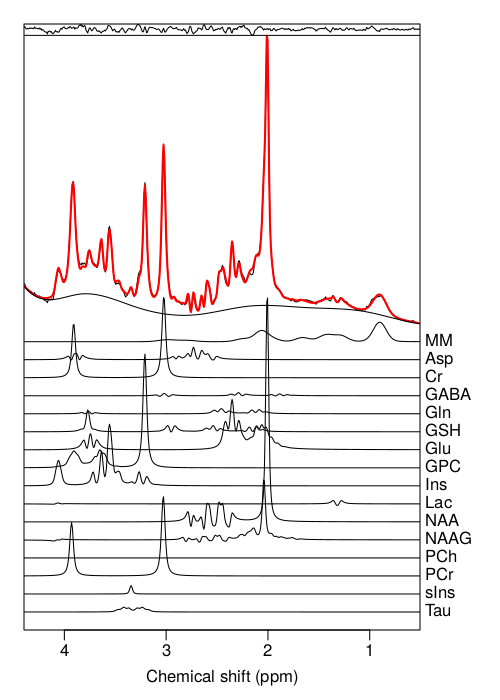
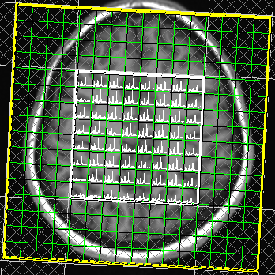

About the lab
Our brains are composed of around 100 billion cells, each of which is constantly active undergoing a series of chemical reactions between small molecules known as metabolites. The goal of the neurometabolic imaging lab is to investigate how the quantities of these molecules relate to brain health and function.
Techniques
Magnetic Resonance Imaging (MRI) scanners generate and measure water signals in our body to produce incredibly detailed pictures of brain structure, and are commonly used in hospitals to diagnose brain injury or disease. The same MRI scanning technology may also be used to perform a technique called Magnetic Resonance Spectroscopy (MRS) - which allows the levels of a number of brain metabolites (neurometabolites) to be measured. In MRS scans, a spectrum is typically obtained from a single brain region (Single Voxel Spectroscopy) which is subsequently decomposed into its constituent metabolite signals using advanced software analysis algorithms:
Multiple spectra from different brain locations may also be acquired using Magnetic Resonance Spectroscopic Imaging (MRSI), allowing the metabolite information to be combined and compared with conventional MRI:
Whilst MRS is extremely powerful, providing a “molecular snapshot” of brain cell biology, the low concentrations of metabolites relative to water molecules presents a number of technical challenges towards getting reproducible results across the whole brain. Research into novel methods to acquire and analyse MRS data to improve reliability is a core activity of the Neurometabolic Imaging Lab.